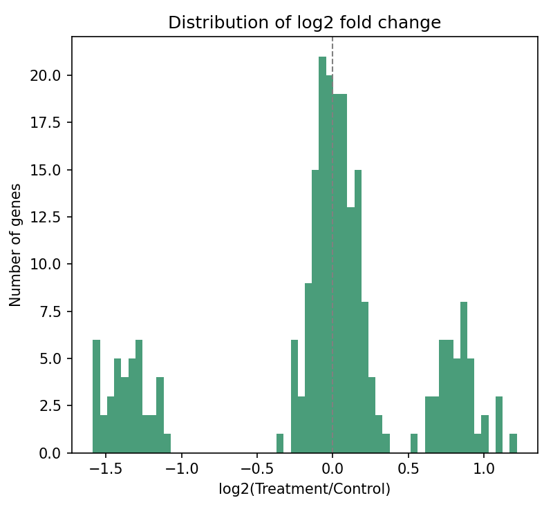

run_python · rnaseq_counts.csv
import pandas as pd
import numpy as np
df = pd.read_csv("rnaseq_counts.csv")
ctrl = df.filter(like="ctrl_").mean(axis=1)
trt = df.filter(like="treat_").mean(axis=1)
lfc = np.log2((trt + 1) / (ctrl + 1))
fig.savefig("control_vs_treatment_means.png",
dpi=200)
control_vs_treatment_means.pngv1 → v2 · human edit
Provenance
CodeLogMessagesEnvironment
run_python · turn 1 · step 2
general 2026.09.1 · py 3.13 · R 4.5
The AI analyst
that shows its work.
Trustworthy research =
agent trace+chart provenance+data transparency
DSHPython + RLocal firstmacOS